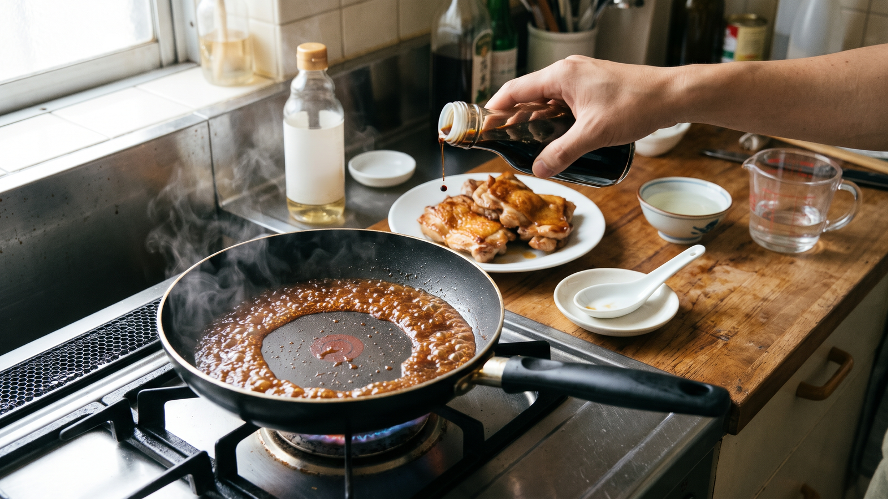

煮詰める料理の味つけは「最後」に。失敗しにくい塩味の整え方
「レシピ通りに作ったつもりなのに、照り焼きや煮魚がしょっぱくなってしまった」という経験はありませんか。
照り煮や煮込みのように水分を飛ばす料理は、塩味を仕上げの直前に決めると失敗しにくくなります。
理由は、フライパンやお鍋の中で起きる変化にあります。 火にかけて煮詰めていくと、蒸気となって減っていくのは水分だけです。おしょうゆに含まれる塩分は蒸発しないため、減らずにそのまま残ります。同じ塩分が半分の水分の中に残るため、計算するとおよそ2倍の濃さになります。
調味料に含まれる塩分は、思ったよりも多いものです。千葉県がんセンター栄養科『食事のとりかた 減塩のための工夫』によると、こいくちしょうゆ大さじ1（18g）には塩分（食塩相当量）が2.6g、食塩小さじ1（5g）には塩分が5.0g含まれています。煮詰めることで、この塩分が少なくなった煮汁にギュッと集まるわけです。ちなみに厚生労働省 用語解説（食塩相当量）では、1日の塩分の目標量（18歳以上）を女性6.5g未満、男性7.5g未満としています。
千葉県栄養士会・松戸保健所『減塩』の案内（2019年）にもあるように、一度入れてしまった調味料を後から取り除くことはできません。
そこで普段のお料理では、「最初は味つけを控えめにしておき、煮詰まったあとに味見をして少しずつ足す」という手順にすると、ちょうどよい味に整えやすくなります。
---
今夜作れる：鶏もも肉の照り煮
材料と作り方は、ご家庭で試しやすいように考えた一例です。
材料（2人分）
* 鶏もも肉：1枚（約250g） * 水：100ml * 酒：50ml * みりん：大さじ1 * しょうゆ：小さじ1（最初はこれだけ）
作り方
- フライパンを温め、鶏肉の皮目を下にして焼き色をつけます。
- 水、酒、みりん、しょうゆ小さじ1を加え、中火で煮ます。
- 鶏肉に火が通ったら、いったんお肉だけをお皿に取り出します。
- フライパンに残った煮汁だけを、中火で量が半分くらいになるまで煮詰めます。
- とろみがついてきたら火を止める前に味見をし、足りなければしょうゆを数滴ずつ足して好みの味に整えます。
- 鶏肉をフライパンに戻し、煮汁を全体にからめます。中までしっかり火が通っていることを確認して火を止めます。
---
パスタソースやカレー、スープにも活かせるコツ
「水分が飛んだ分だけ味が濃くなる」という仕組みは、照り煮以外でも同じです。
水分を煮詰めて仕上げるトマトパスタソース、じっくり煮込むシチュー、温め直すうちに水分が減っていくカレーやスープなども、最初から塩味を決めすぎないように気をつけると安心です。仕上がりの直前に味見をして、足りない分だけを補うようにすると、思った味に近づけやすくなります。
煮詰めるお料理を作るときは、「調味料は控えめから始めて、煮詰まってから少しずつ足す」。この手順を、ぜひ今夜のおかず作りから試してみてください。
---
参考資料
* 千葉県栄養士会・松戸保健所『減塩』の案内（2019年） * 千葉県がんセンター栄養科『食事のとりかた 減塩のための工夫』 * 厚生労働省 用語解説（食塩相当量）